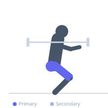
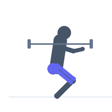

Exercise guide / Barbell Cossack Squat
Barbell Cossack Squat
A barbell-loaded version of the cossack squat, a lateral squat pattern that trains unilateral quad and hip strength through a large range of lateral motion. The loaded version increases mechanical demand on the working leg's quad, adductor, and glute while also training hip mobility under load.
Primary muscles
rectus femoris
vastus medialis
gluteus maximus
adductor magnus
Secondary muscles
vastus lateralis
biceps femoris long head
gluteus medius
adductor longus
Stabilizers
transverse abdominis
erector spinae
gracilis
Equipment
Standard Barbell
Optional
Kettlebell
Dumbbell (Fixed)


Starting position
- Position a barbell on your upper back as for a back squat. Stand with feet significantly wider than shoulder width.
Setup
- Set up the barbell in a rack to the correct height for a back squat. Unrack and walk out to a wide stance.
Steps
- Step 1: Shift your weight to one side, bending that knee deeply while keeping the opposite leg straight.
- Step 2: Lower yourself into a full lateral squat on the working side, keeping the working foot fully flat.
- Step 3: The straight leg remains extended on the floor with the toes pointing up or slightly outward.
- Step 4: Drive through the working leg heel to return to the center and repeat on the opposite side.
Coaching cues
- Foot stays flat on the working side
- Sit into the hip of the working leg
Breathing
- Inhale on the descent. Exhale on the drive to center.
Range of motion
- Deep lateral squat with the working thigh well below parallel. Opposite leg extended.
Tempo
- 3-1-2-0
Common mistakes
- Allowing the working heel to lift off the floor
- Collapsing the torso forward excessively
Safety
- Ensure adequate hip mobility before loading — practice the bodyweight version first
- Keep the bar securely on the upper back
Training
- strength: 3–8 reps
- hypertrophy: 8–15 reps
- strength: 3–5 sets
- hypertrophy: 3–4 sets
- Rest: {'strength': 180, 'hypertrophy': 90}